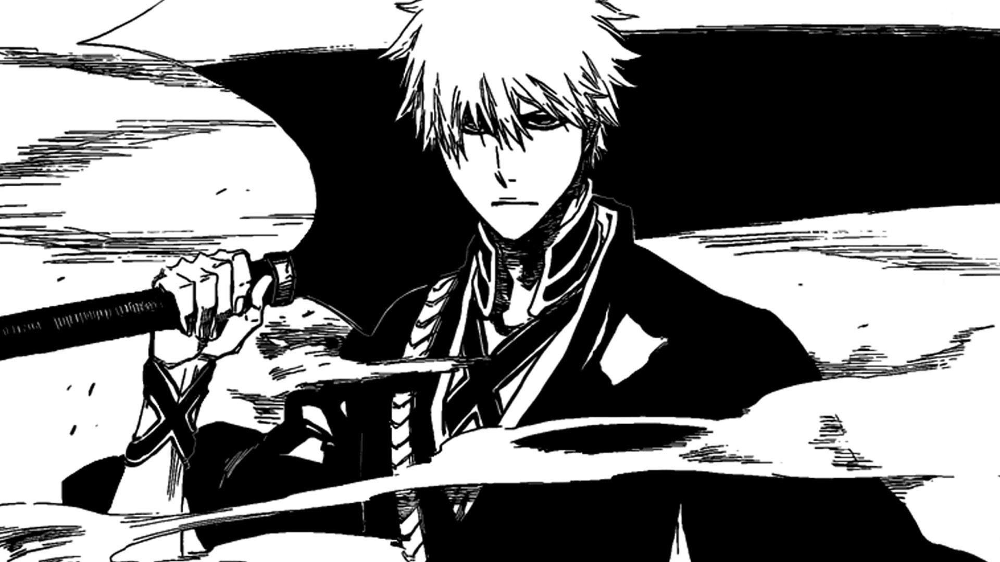
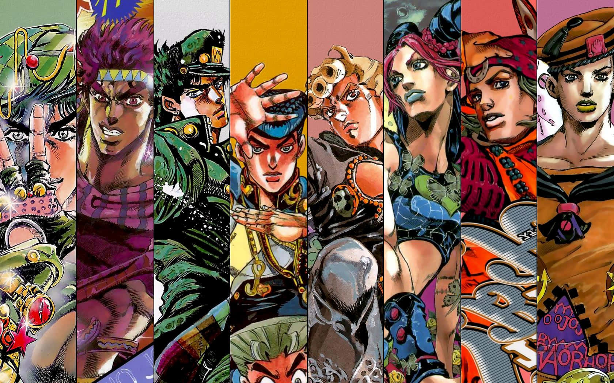
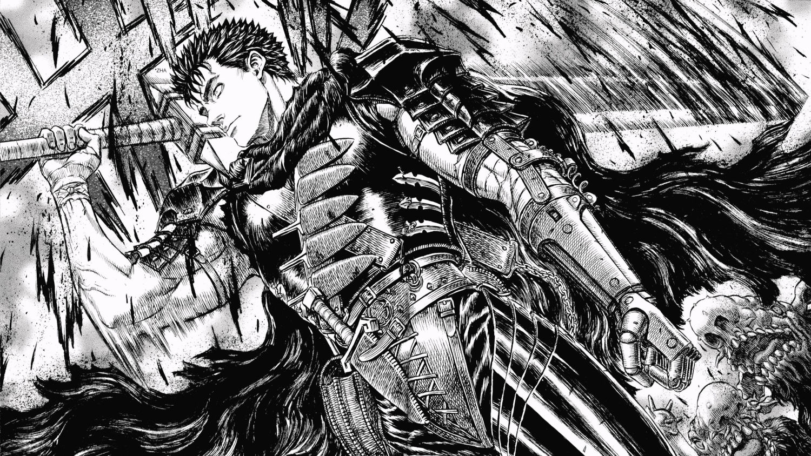

Mangás Mais Populares no Mundo
Top 3 Mangás Mais Populares no Mundo
Bleach

Ambientado na cidade fictícia de Karakura, a trama acompanha Ichigo Kurosaki, um estudante de ensino médio de 15 anos que possui a rara habilidade de ver fantasmas. Sua vida muda drasticamente ao conhecer Rukia Kuchiki, uma Ceifeira de Almas (Shinigami) cuja função é purificar os Hollows — espíritos corrompidos que devoram outras almas — e guiar os mortos para a Soul Society. Quando Rukia é gravemente ferida em batalha, ela decide transferir seus poderes para Ichigo em um ato de desespero, transformando o jovem humano em um Shinigami substituto. A partir disso, Ichigo assume a responsabilidade de proteger o mundo humano e o espiritual, envolvendo-se em conspirações milenares, invasões de reinos ocultos e batalhas colossais com sua gigantesca espada Zanpakutou, em uma obra escrita e ilustrada por Tite Kubo que revolucionou o design de personagens e a estética dos mangás de ação.
Como um dos integrantes do lendário "Big Three" — o trio de mangás que dominou a revista semanal Weekly Shonen Jump e a cultura pop nos anos 2000 ao lado de Naruto e One Piece —, o mangá de Bleach é um dos maiores sucessos comerciais da história do Japão, superando a marca de 130 milhões de cópias em circulação globalmente. Finalizado originalmente em 74 volumes, a obra mantém uma relevância cultural avassaladora que impulsionou o recente retorno triunfal da franquia às telas com a adaptação em anime do arco final, Bleach: Thousand-Year Blood War (A Guerra Sangrenta dos Mil Anos), produzida pelo estúdio Pierrot. O mangá é mundialmente aclamado por seu estilo artístico único, que mistura moda urbana, poesia na abertura dos volumes, iconografia gótica e influências culturais diversas (espanholas, alemãs e budistas) para criar um universo visualmente inconfundível.
JoJo's Bizarre Adventure

Dividida em uma saga geracional que atravessa séculos, a icônica obra acompanha a linhagem da família Joestar em sua eterna batalha contra forças sobrenaturais e vilões grandiosos, começando pelo conflito vitoriano entre o nobre Jonathan Joestar e seu irmão adotivo, o implacável vampiro Dio Brando. Criado por Hirohiko Araki, o mangá revolucionou as histórias de ação e mistério ao evoluir de combates baseados na energia marcial Hamon para a introdução dos Stands — manifestações psicofísicas do espírito de luta de cada indivíduo com habilidades sobrenaturais totalmente únicas. Estruturada em múltiplas partes independentes, cada uma protagonizada por um novo descendente apelidado de "JoJo", a narrativa expande-se por cenários globais e diferentes épocas em um universo inconfundível, aclamado por seu estilo visual extravagante altamente influenciado pela alta moda, poses dramáticas e constantes referências à cultura pop e ao rock ocidental
Como uma das produções mais longevas, influentes e reverenciadas da história dos quadrinhos japoneses, o mangá de JoJo's Bizarre Adventure consolidou um sucesso comercial gigantesco ao ultrapassar a expressiva marca de 120 milhões de cópias em circulação globalmente. Sendo a série mais longa da prestigiada editora Shueisha, com mais de 135 volumes publicados, a franquia transcendeu gerações e expandiu seu império com o aclamado lançamento da revista oficial JOJO Magazine e com as recentes adaptações animadas — como a estreia da aguardada saga Steel Ball Run —, mantendo a obra frequentemente posicionada nos rankings de materiais mais vendidos no Japão e no Ocidente. O impacto cultural de JoJo na internet e na comunidade otaku é imensurável, tendo transformado suas poses características, falas dramáticas e estéticas em um dos maiores ecossistemas de memes e referências artísticas do planeta.
Berserk

Ambientado em um mundo medieval sombrio e implacável, o enredo acompanha Guts, um guerreiro solitário e trágico conhecido como o Espadachim Negro, que vaga caçando criaturas demoníacas conhecidas como Apóstolos. Carregando a gigantesca espada Dragon Slayer e marcado com um estigma que atrai espíritos malignos todas as noites, a jornada de Guts é motivada por uma sede implacável de vingança contra Griffith, seu antigo líder e melhor amigo que o traiu de forma devastadora para ascender à divindade. Escrita e ilustrada pelo mestre Kentaro Miura, a narrativa transita do trágico e militar arco da Era de Ouro para uma fantasia sombria (dark fantasy) visceral, abordando temas profundos como a podridão da ambição humana, o livre-arbítrio, o trauma e a resiliência psicológica diante de um destino inevitável.
Aclamado mundialmente pela crítica como a maior obra-prima do terror e da fantasia sombria nos quadrinhos, o mangá de Berserk ultrapassou a marca histórica de 70 milhões de cópias em circulação globalmente, consolidando-se como um dos mangás mais vendidos de todos os tempos. O apelo internacional da obra é imensurável, tendo superado as 10 milhões de cópias vendidas apenas em sua edição em inglês no mercado ocidental, além de registrar mais de 30 milhões de volumes físicos distribuídos fora do Japão. O impacto cultural e o respeito pela obra permanecem gigantescos mesmo após o trágico falecimento de Kentaro Miura, com o mangá mantendo vendas massivas e aclamação contínua sob a supervisão do estúdio Gaga e de Kouji Mori, servindo também como a principal inspiração estética e narrativa para grandes franquias globais de entretenimento, como os jogos eletrônicos da franquia Dark Souls e Elden Ring.